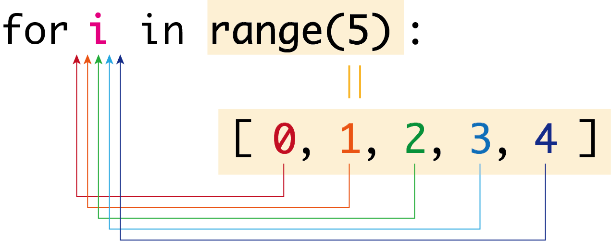

(1) for文の書き方
for文とは
while文と同じように、繰り返し処理を実行する構文にfor文があります。for文は、指定回数だけ処理を繰り返すことができます。
for ループ変数 in range(回数):
# 繰り返し処理
for文の末尾はコロン:で終わり、繰り返し処理の中の記述はインデントを１つ分下げます。
for文の基本
次は、5回処理を繰り返す例です。iの値が0〜4の5回繰り返していることがわかります。
for i in range(5):
print(i)
0
1
2
3
4
range関数とfor文
range関数は、range(n)と書くと、0からn個の整数列を作ります。例えば、range(5)は[0, 1, 2, 3, 4]を意味します。この値がループ変数iに順に代入され（iに、0→1→2→3→4）、5回の処理が実行されます。ループ変数はiでなくても構いませんが、慣例としてiが用いられます。

for i in range(11):
print(i, end=" ") # ※1
0 1 2 3 4 5 6 7 8 9 10
- print("...", end=" ")
print関数の引数にend="..."を指定すると、末尾に出力する文字を指定することができます。何も指定しなければ（デフォルトでは）改行コード（\n）となりますが、上の例のように半角スペースを指定すると、改行せずに半角スペースが出力されます。
(2) range関数について
range関数は、引数の数によって返す整数列が異なります。
range(終了値)
range(終了値)は、0〜(終了値-1)の整数列を返します。
つまり、range(5)は、[0, 1, 2, 3, 4]を返します。
for i in range(5):
print(i, end=" ")
0 1 2 3 4
range(開始値,終了値)
range(開始値,終了値)は、開始値〜(終了値-1)の整数列を返します。
つまり、range(10, 20)は、[10, 11, 12, ..., 19]を返します。
for i in range(10, 20):
print(i, end=" ")
10 11 12 13 14 15 16 17 18 19
range(開始値,終了値,ステップ)
range(開始値,終了値,ステップ)は、開始値〜(終了値-1)までステップおきに増加する整数列を返します。
つまり、range(10, 20, 3)は、[10, 13, 16, 19]を返します。
for i in range(10, 20, 3):
print(i, end=" ")
10 13 16 19
減っていくforループ†
ステップには負数を指定することもできます。
range(5, 0, -1)は、5から1まで、-1ずつ減らす整数列、つまり[5, 4, 3, 2, 1]を返します。
for i in range(5, 0, -1):
print(i, end=" ")
5 4 3 2 1
range(5, -1, -1)は、5から0まで、-1ずつ減らす整数列、つまり[5, 4, 3, 2, 1, 0]を返します。
for i in range(5, -1, -1):
print(i, end=" ")
5 4 3 2 1 0
ここで、終了値は範囲に含まれないことに注意してください。0を含めるためには、終了値を0ではなく-1を指定します。
(3) for文の練習
1〜10の和
for文を使って1〜10の和を求めるプログラムを書いてみましょう。
sum = 0 # 和を入れておく変数
for i in range(1, 11): # 1〜10を順に i に代入する
sum = sum + i # sumに i を加えて sum に代入する（for文の中なのでインデントを１つ下げる）
print(sum) # sumを出力する（for文の外なので、インデントを戻す）
55
変数sumは、和を入れておく変数です。sum = sum + iで前のsumの値にiを加えて、新たなsumとしています。
つまり、sumの値は、
- i = 1のとき、sum = 0 + 1 = 1
- i = 2のとき、sum = 1 + 2 = 3
- i = 3のとき、sum = 3 + 3 = 6
- i = 4のとき、sum = 6 + 4 = 10
- i = 5のとき、sum = 10 + 5 = 15
- ・・・
と変化していきます。試しに、sum = sum + iの行のあとに、print("i =", i, ",\t sum =", sum)を追加して確かめてみましょう。
*出力
for文を使って、繰り返すごとに*の数が１つずつ多くなるプログラムを書いてみましょう。
文字列どうしを結合する場合は、文字列 + 文字列です。
s = "" # 文字列変数 *を格納する。初期値は空文字。
for i in range(5): # 5回繰り返す
s = s + "*" # sに*を１つ結合する
print(s) # sを出力
*
**
***
****
*****